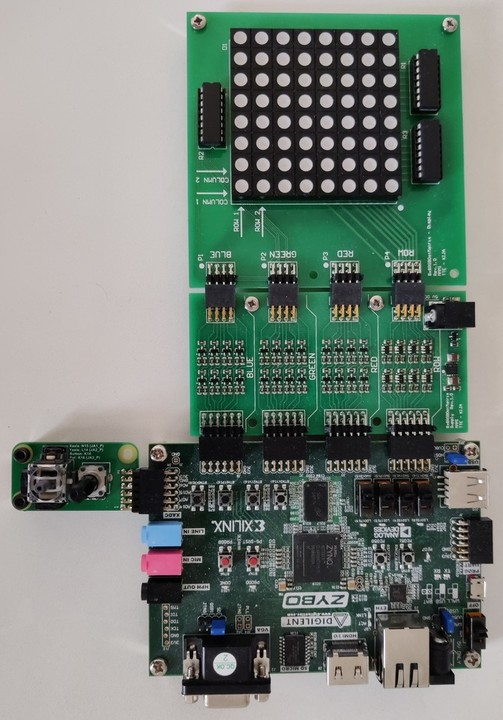

Part of the individual project for Embedded Systems
Created by Sebastian Madsen
Welcome to the front page of the Space Invaders individual project for the Zybo board with Zynq-7010.
The project is written in C and VHDL and uses the LED Matrix and joystick modules provided for the Embedded Systems course on the 1st semester of the Masters in Electronics at the University of Southern Denmark.
The game makes use of the FPGA's flexibility as well as the variety of I/Os and ADC connections to create an interactive experience.
This web page is hosted at 192.168.137.2/frontpage.html when connected through an Ethernet cable to a PC.
The page contains links in the top leading to other pages containing a variety of information on the game.
The page is created using BusyBox's httpd module, which is included with the Linaro distribution used for the Embedded Linux file system on this system.

Figure: Picture of the Zybo with Zynq-7010, LED Matrix, and Joystick PCB used for Embedded Systems